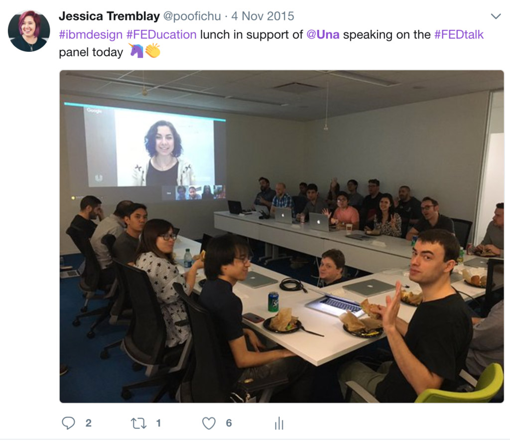
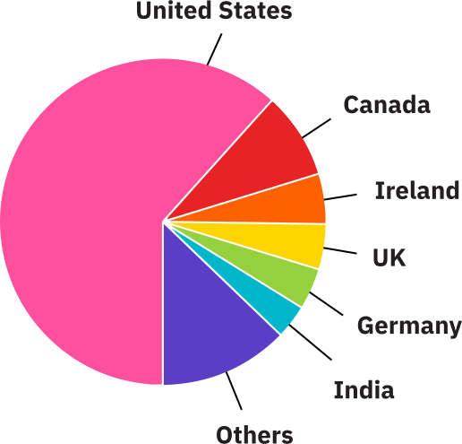
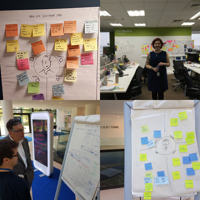
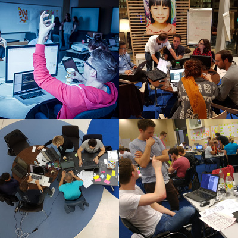
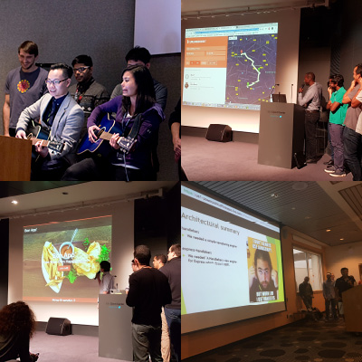

- Jessica Tremblay
Fairy FED Mother
 Sam Richard
Sam Richard¯\_(ツ)_/¯
FED@IBM
FED@IBM is IBM's global Front-End Developer community
UX design, visual design, user research
Other back-end engineering
Web Markup
JavaScript Frameworks
Vanilla JavaScript
Non-Browser JavaScript
Native Mobile
Spectrum of Front-End Development Skills
Our Story Starts in the Fall of 2014
Crisis and Urgency
Innovators and Community
A Shared New Vision
Innovation and Action
Anchor Change
FEDucation
Twice-monthly meetings featuring talks on best practices, new tools, techniques, and important topics and concepts relevant to our front end development community.
FEDucation is a community driven program.
Going global with
🌮 and ☕️
FEDucation FunFacts
- Created by Jessica Tremblay, Mina Markham, and Alex Carroll
- First ever FEDucation was on 2/14/15 ❤️ - On the basics of APIs
- 64 sessions so far
- Talks are recorded and then accessible by the world-wide FED community on our FED@IBM blog
Speakers from our IBM Community
- Open Source Community
- Accessibility Tooling Team
- Michael Barlock - The Importance of Code Reviews
- Sam Richard - Houdini, CI, Spec to a Standard
- Jason Lengstorf - PWAs and Service Workers
- Ibrahim Meru - Globalization
- Carol Smith - User Experience Myths
Special Guest List
- Alex Russell (Google) - Progressive Web Apps
- Sarah Drasner (Microsoft) - SVG Animation
- Zane Lackey (Signal Sciences) - Security
- Jason Pamental - Responsive Typography
- Simon St. Laurent (Lynda.com) - Safari Online
- Mozilla Roadshow - Mozilla Dev Tools
- Evan You - Vue.js
- Github & Zenhub
- Juan Salas (InVision) - Dev to Design Workflow
- Keith Adams (Slack) - How Slack Really Works
2016+ Stats & Numbers
9,069 total registrations -
- 5,603 USA
- 774 Canada
- 1,180 Germany + Ireland + UK
- 247 India (Our newest community, and growing!)
- 1,265 Other

I love the vast amount of learning sessions and the encouragement for new FEDs to lead them.
James Rauhut - Front-End Developer, IBM Core
Getting the perspective of such a large group of developers from such a wide range of backgrounds is pretty unique. Great part of our FED@IBM community!
David Conner - Front-End Developer, Watson IoT
Creating community and knowledge sharing at a global scale 🌎
Hackademy
Hackademy is a week long immersive enablement program, focused on modern Front-End Development tools, techniques, and best practices
Hackademy has gone through quite a number of iterations since our first event back in August of 2015
- Rev 0 - TEACH ALL THE THINGS
- Rev 1 - Local and Social
- Rev 2 - Workshops
- Rev 3 - Internationalization
Damon making a snow angel
The first half of Hackademy are our conference-style talks. They're an hour long each, and designed to deliver conference-like quality and information to those who may not be able to attend events themselves
- Design for Devs
- Intro to Git and GitHub
- Accessibility
- Architecture
- Task Runners
- Sass
- Responsi(ble)(ve) Design
- Systems of Design
- Performance
After the talks are done, we hold two 90 minute workshops
- HTML and CSS
- Vanilla JavaScript
On Tuesday night, we break everyone up in to teams of 5-7 and set them on their way to 2 days of hacking
Teams have the next two days to design, build, and deploy their apps
Hackademy ends with the teams presenting what they've built
…FED@IBM Hackademy fills in a critical gap that exists in our training between those 2 other skill development events [IBM Design Thinking and code bootcamps].… The FED@IBM Hackademy is the "third leg of the stool" and a vital element for solid end-to-end understanding of modern application architecture and development.
[I]t's not simply the FED community at IBM that has benefited... engineering as a whole has prospered at IBM.
Phil Gilbert - GM of Design at IBM
👍
https://snugug.github.io/finding-community
- What is #IBMHackademy
- Hackademy, All Day Long (Apple Music)
- @poofichu - Jessica Tremblay
- @Snugug - Sam Richard